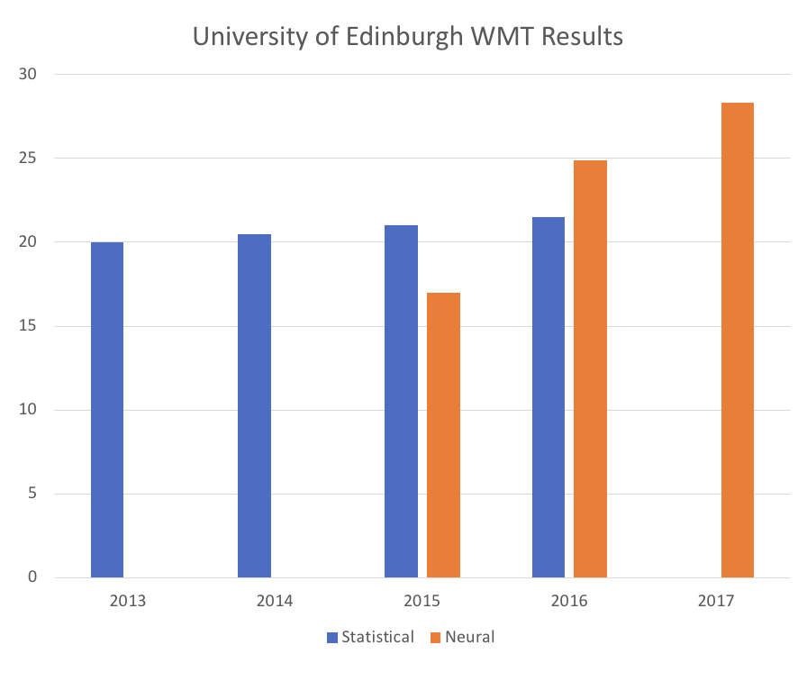
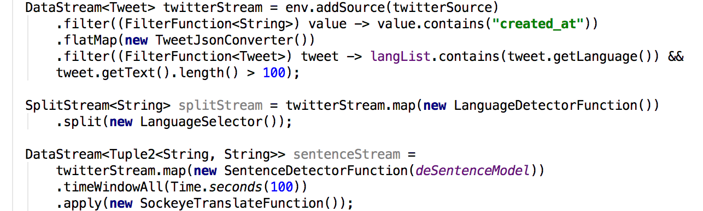

Snorkel BeamBell: Weak Supervision on Apache Flink
Suneel Marthi
February 2, 2020
FOSDEM, Brussels, Belgium
$WhoAmI
Suneel Marthi
@suneelmarthi
- Member of Apache Software Foundation
- Committer and PMC on Apache Mahout, Apache OpenNLP, Apache Streams
Agenda
- What is Weak Supervision ?
- Why is it Needed?
- What problem does it solve?
- What are Learning Functions?
- Overview of Apache Beam
- Sample Use Cases
OSS Tools
- Snorkel - Framework for Programmatically Building and Managing Training Data
- Apache Beam - Unified model for defining both batch and streaming data-parallel processing pipelines
- Apache Flink - distributed processing engine for stateful computations over data streams.
Problem of Labeled Training Data
Insufficient Labeled Data
Lack of Initial labeled training data to kick start Machine Learning models
Lack of training data available over time unlike the big Internet companies
Maybe many years in order to accummulate sufficient training data
Lack of Subject Matter Expertise
Labeling training data requires necessary subject matter experise
Labeling and managing training datasets by hand is one of the biggest bottlenecks in machine learning.
Creation of labeled training data becomes prohibitively expensive and impossible when dealing with large datasets
For eg: Having to deal with datasets at Google Scale
Possible Solutions
Weak Labels
Intent is to decrease the cost and increase the efficiency of human efforts expended in hand-labeling data.
Leverage Subject Matter Expertise got less precise input to create heuristic rules for labeling data
"Data Programming: Creating Large Training Sets, Quickly" - Alexander Ratner, Christopher De Sa, Sen Wu, Daniel Selsam, Christopher Ré https://arxiv.org/pdf/1605.07723v3.pdf
Lack of Subject Matter Expertise
Labeling training data requires necessary subject matter experise
Creation of labeled training data becomes prohibitively expensive and impossible when dealing with large datasets
What is Weak Supervision ?
- How to translate a word → lookup in dictionary
- Gebäude — building, house, tower.
- Multiple translations
- some more frequent than others
for instance: house and building most common
Parallel Text
- In a parallel text we align sentences in one language with the sentences in the other
Das Gebäude ist hoch ↓ ↓ ↓ ↓ the building is high
Parallel Text
A source word could translate into multiple target words
| Das | ist | ein | Hochhaus | ||
| ↓ | ↓ | ↓ | ↙ | ↓ | ↘ |
| This | is | a | high | rise | building |
Neural Machine Translation
Encoder Decoder Architecture
Encoder Decoder Architecture with Attention

Transformer Model
"Attention Is All You Need" - Ashish Vaswani, Noam Shazeer, Niki Parmar, Jakob Uszkoreit, Llion Jones, Aidan N. Gomez, Lukasz Kaiser, Illia Polosukhin
Google Brain https://arxiv.org/abs/1706.03762
Generate Translations from Neural Network models trained on Bilingual Corpora.
Translation happens per a probability distribution one word at time (no phrases).


Why move from SMT to NMT?
The University of Edinburgh’s Neural MT Systems for WMT17 – Rico Sennrich, Alexandra Birch, Anna Currey, Ulrich Germann, Barry Haddow, Kenneth Heafield, Antonio Valerio Miceli Barone and Philip Williams.
NMT Samples
Jetzt LIVE: Abgeordnete debattieren über Zuspitzung des Syrien-Konflikts.
last but not least, Members are debating the escalation of the Syrian conflict.
Sie haben wenig Zeit, wollen aber Fett verbrennen und Muskeln aufbauen?
You have little time, but want to burn fat and build muscles?
NMT Challenges – Twitter Content

NMT Challenges – Input
- The input into all neural network models is always a vector.
- Training data is always parallel text.
- How do you represent a word from the text as a vector?
Embedding Layer


NMT Challenges – Rare Words
Ok we can now represent 30,000 words as vectors, what about the rest?
NMT Challenges – Byte Pair Encoding

Rico Sennrich, Barry Haddow and Alexandra Birch (2016): Neural Machine Translation of Rare Words with Subword Units Proceedings of the 54th Annual Meeting of the Association for Computational Linguistics (ACL 2016). Berlin, Germany.
Byte Pair Encoding
"positional addition contextual"Byte Pair Encoding
"posiXonal addiXon contextual" ti = XByte Pair Encoding
"posiXonY addiXon contextuY" ti = X al = YByte Pair Encoding
"posiZnY addiZn contextuY" ti = X al = Y Xo = ZByte Pair Encoding
theseing
other
s,
must
Member
NMT Challenges – Jagged Tensors
Input is not sorted by length.
Jagged Tensors cont.

Jagged Tensors cont.

Jagged Tensors cont.

Streaming Pipelines for NMT
NMT Inference Preprocessing

Complete Pipeline (Flink)
NMT Inference Pipeline

Future Work
- Train NMT models on real time streams
- Ideally ingest 2 similar streams in different languages to train NMT models
- Definitely feasible with Apache Flink Stateful Stream Processing
- Possible to do both Training and Inference using Flink's Broadcast State
Links
- Snorkel: https://www.snorkel.org/
- Slides: https://smarthi.github.io/FOSDEM-2020/index.html#/
- Code: https://github.com/smarthi/streamingnmt